Original de Jinkey
Agradecimientosshowonne、yubangAsesoría técnica
Dirección de la demo:
http://demo.jinkey.io/vue2
Código fuente:
https://github.com/Jinkeycode/vue2-exampleTutorial de Vue2:https://www.runoob.com/vue2/vue-tutorial.html
¿Qué es Vue?
Vue es un framework de frontend, con las siguientes características:
Enlace de datos (data binding)
Por ejemplo, si cambias el valor de una etiqueta Input, sesincronizará automáticamenteactualizando el valor de otros componentes de la página que estén vinculados a ese cuadro de entrada
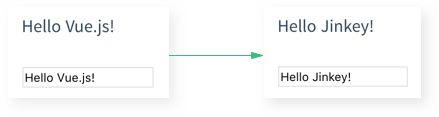
Componentización
En la página, incluso un botón puede ser un archivo .vue separado; estos pequeños componentes se pueden ensamblar directamente como bloques de LEGO, mediante referencias mutuas.
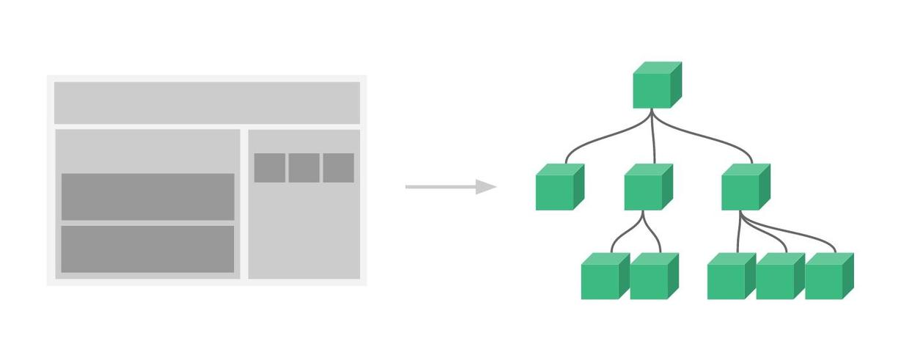
Entorno de desarrollo recomendado para Vue2.0
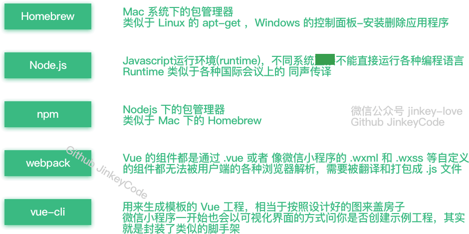
Homebrew 1.0.6(Mac)、Node.js 6.7.0、npm 3.10.3、webpack 1.13.2、vue-cli 2.4.0、Atom 1.10.2
Instalación del entorno
Instalar brew en Mac OS
Abre la terminal y ejecuta el siguiente comando:
/usr/bin/ruby -e "$(curl -fsSL https://raw.githubusercontent.com/Homebrew/install/master/install)"
Instalar nodejs en Mac OS
brew install nodejs
Se produce un error al actualizar la versión de npm con npm install npm@3.10.3:
(node:42) fs: re-evaluating native module sources is not supported.
Solución:
Descarga el paquete de instalación 6.70 desde el sitio oficial e instálalo de nuevo (lo anterior fue equivalente a configurar las variables de entorno; ahora instala de nuevo para actualizar a la última versión de npm)
- Parece que antes el instalador del sitio oficial no configuraba las variables de entorno automáticamente; como yo había instalado nodejs previamente en mi equipo, las variables de entorno ya estaban configuradas. No sé si el instalador actual las configurará automáticamente.
En Windows, simplemente descarga el paquete de instalación.
En Linux se puede instalar usando el comando apt-get (ubuntu) o yum (centos).
Puedes consultar:http://www.runoob.com/nodejs/nodejs-install-setup.html
Obtener permisos de acceso al directorio de instalación de módulos de nodejs
sudo chmod -R 777 /usr/local/lib/node_modules/
Instalar el espejo (mirror) de Taobao
Todos sabemos que usar directamente el espejo oficial de npm en China es muy lento. Aquí recomendamos usar el espejo de NPM de Taobao.
npm install -g cnpm --registry=https://registry.npmmirror.com
De esta manera, puedes usar el comando cnpm para instalar módulos:
cnpm install [name]
Instalar webpack
cnpm install webpack -g
Instalar el andamiaje de Vue (vue-cli)
npm install vue-cli -g
Busca una carpeta en el disco duro para el proyecto y entra en ese directorio desde la terminal
cd 目录路径
Crear un proyecto a partir de la plantilla
vue init webpack-simple nombre_del_proyecto<el nombre del proyecto no puede contener chino>
o crear un proyecto vue1.0
vue init webpack-simple#1.0 nombre_del_proyecto<el nombre del proyecto no puede contener chino>
Habrá algunas configuraciones de inicialización, ingresa lo siguiente:Target directory exists. Continue? (Y/n)Presiona Enter para usar el valor predeterminado (luego se descargará la plantilla vue2.0, puede que necesites un proxy)Project name (vue-test)Presiona Enter para usar el valor predeterminadoProject description (A Vue.js project)Presiona Enter para usar el valor predeterminadoAuthorEscribe tu propio nombre
Usa el comando cd para entrar en el directorio del proyecto creado
El directorio del proyecto se muestra en la figura:
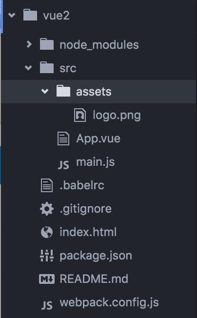
Instalar las dependencias del proyecto
Asegúrate de instalar desde el repositorio oficial; dado que los servidores de npm están en el extranjero, este paso será muy lento.
npm install
No instales desde el espejo nacional cnpm(esto hará que más adelante falten muchas bibliotecas de dependencias)
cnpm install
Instalar el módulo de enrutamiento de Vuevue-routery el módulo de peticiones de redvue-resource
cnpm install vue-router vue-resource --save
Iniciar el proyecto
npm run dev
Resolver problemas (los siguientes problemas pueden deberse a que Vue2.0 provoca que otras herramientas relacionadas de compilación y empaquetado no se hayan actualizado)
【Importante】Después se descubrió que estos problemas se deben a que npm no es la versión más reciente 3.10.2; con npm 3.9.5 aparecen los siguientes problemas
Solución: ejecuta el siguiente comando
npm update -g
Error
Error: Cannot find module 'opn' Error: Cannot find module 'webpack-dev-middleware' Error: Cannot find module 'express' Error: Cannot find module 'compression' Error: Cannot find module 'sockjs' Error: Cannot find module 'spdy' Error: Cannot find module 'http-proxy-middleware' Error: Cannot find module 'serve-index'
Si usas una versión antigua de vue-cli también pueden aparecer otros errores; necesitas actualizar vue-cli
npm update vue-cli
Luego puedes ver la versión global actual de vue-cli
npm view vue-cli
Instala esta dependencia en el entorno de desarrollo del proyecto
cnpm install opn --save-dev cnpm install webpack-dev-middleware --save-dev cnpm install express --save-dev cnpm install compression --save-dev cnpm install sockjs --save-dev cnpm install spdy --save-dev cnpm install http-proxy-middleware --save-dev cnpm install serve-index --save-dev cnpm install connect-history-api-fallback --save-dev
Inicia el proyecto de nuevo, error
ERROR in ./src/main.js Module build failed: Error: Cannot find module 'babel-runtime/helpers/typeof' at Function.Module._resolveFilename (module.js:440:15) at Function.Module._load (module.js:388:25) at Module.require (module.js:468:17) at require (internal/module.js:20:19) at Object.<anonymous> (/Volumes/MacStorage/Coding/Web/vue-test/node_modules/.6.17.0@babel-core/lib/transformation/file/index.js:6:16) at Module._compile (module.js:541:32) at Object.Module._extensions..js (module.js:550:10) at Module.load (module.js:458:32) at tryModuleLoad (module.js:417:12) at Function.Module._load (module.js:409:3) @ multi main ERROR in ./~/.2.1.0-beta.8@webpack-dev-server/client/socket.js Module not found: Error: Can't resolve 'sockjs-client' in '/Volumes/MacStorage/Coding/Web/vue-test/node_modules/.2.1.0-beta.8@webpack-dev-server/client' @ ./~/.2.1.0-beta.8@webpack-dev-server/client/socket.js 1:13-37 @ ./~/.2.1.0-beta.8@webpack-dev-server/client?http://localhost:8080
Instala babel-runtime
cnpm install babel-helpers --save-dev
Inicia el proyecto, de nuevo error
Module build failed: Error: Cannot find module 'babel-helpers' Module build failed: Error: Cannot find module 'babel-traverse' Module build failed: Error: Cannot find module 'json5' Module build failed: Error: Cannot find module 'babel-generator' Module build failed: Error: Cannot find module 'detect-indent' Module build failed: Error: Cannot find module 'jsesc'
Si no encuentra la dependencia, instálala de nuevo
cnpm install babel-helpers --save-dev cnpm install babel-traverse --save-dev cnpm install json5 --save-dev ...不写了，请把全部把旧的环境全部清除，更新到最新版本
Resumen de soluciones
Si te encuentras con
Module build failed: Error: Cannot find module '模块名'
entonces instala
cnpm install 模块名 --save-dev(关于环境的，表现为npm run dev 启动不了) cnpm install 模块名 --save(关于项目的，比如main.js，表现为npm run dev 成功之后控制台报错) 比如escape-string-regexp、strip-ansi、has-ansi、is-finite、emojis-list
Por fin se puede iniciar el proyecto
Después de ingresar el comando, el navegador se abrirá automáticamente; si no funciona con IE por defecto
npm run dev
Cuando el navegador se abra automáticamente verás esta interfaz.
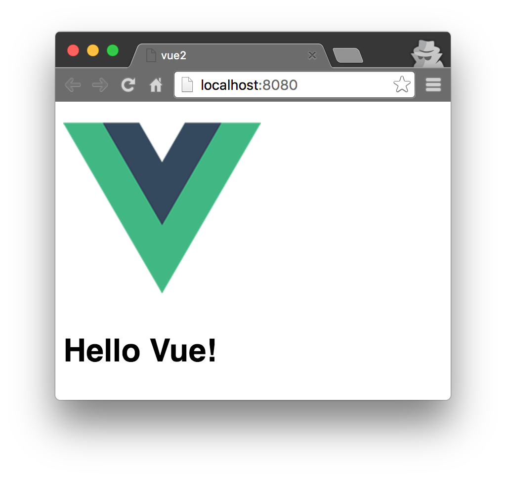
Comienza el viaje con Vue
Abrir el IDE
Se recomienda abrir el proyecto con Atom; necesitas instalar un complemento de resaltado de sintaxis de Vue
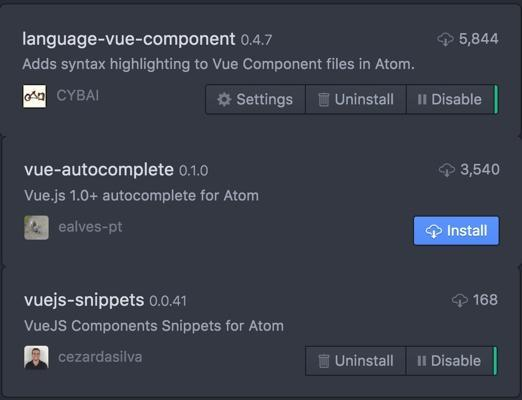
Usar la documentación oficial para aprender lo básico
Veamos un ejemplo del sitio oficial (para la documentación en chino, búscala en línea por tu cuenta)
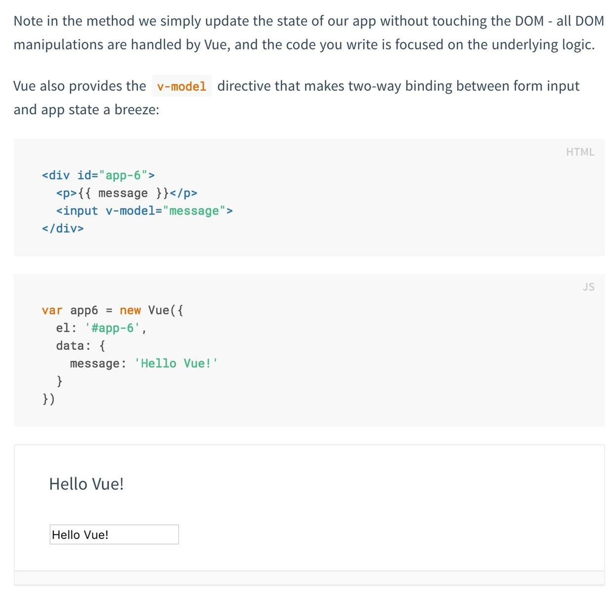
Abre App.vue en el directorio del proyecto
En template se escribe html, en script se escribe js, en style se escriben los estilos
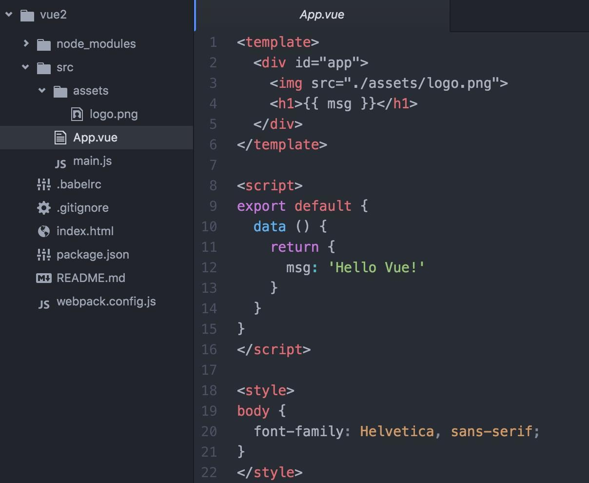
Para facilitar la explicación, escribimos el ejemplo oficial dentro del mismo componente
Aquí hay dos problemas:
PrimeroUn componente solo puede tener un div al mismo nivel; se puede escribir así, por lo que al copiar el ejemplo oficial, solo necesitas copiar el contenido dentro de div.
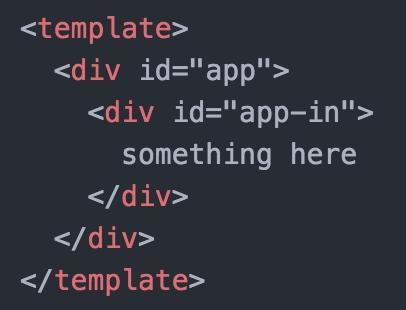
Pero no se puede escribir así: 
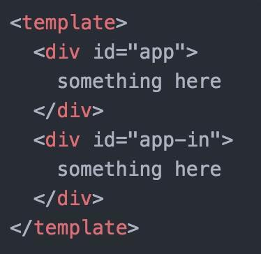
SegundoLos datos deben escribirse dentro de return, no como se muestra en la documentación.
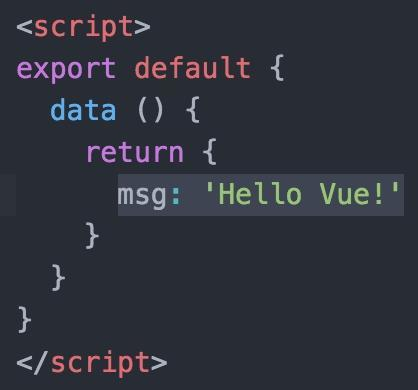
Escritura incorrecta:
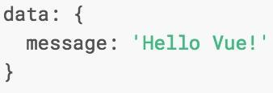
De esta manera, ya puedes estudiar por tu cuenta la parte anterior a los componentes en la documentación oficial.
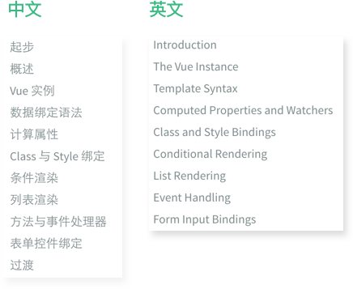
Juguemos con los componentes
Lo anterior trataba básicamente sobre el enlace de datos de varios componentes comunes; a continuación hay que hablar sobre el uso de los componentes de Vue.
En el directorio del proyecto/srccrea unacomponentcarpeta, y dentro decomponentla carpeta crea unfirstcomponent.vuey escribe un componente siguiendo el formato de App.vue y los conocimientos aprendidos anteriormente.
duang... No puedo hacerlo solo porque el documento oficial me lo pida; primero lo pruebo y luego te lo cuento. Cuando terminé, el efecto fue así; espero que cuando el público termine también sea así. (sonrisa misteriosa)
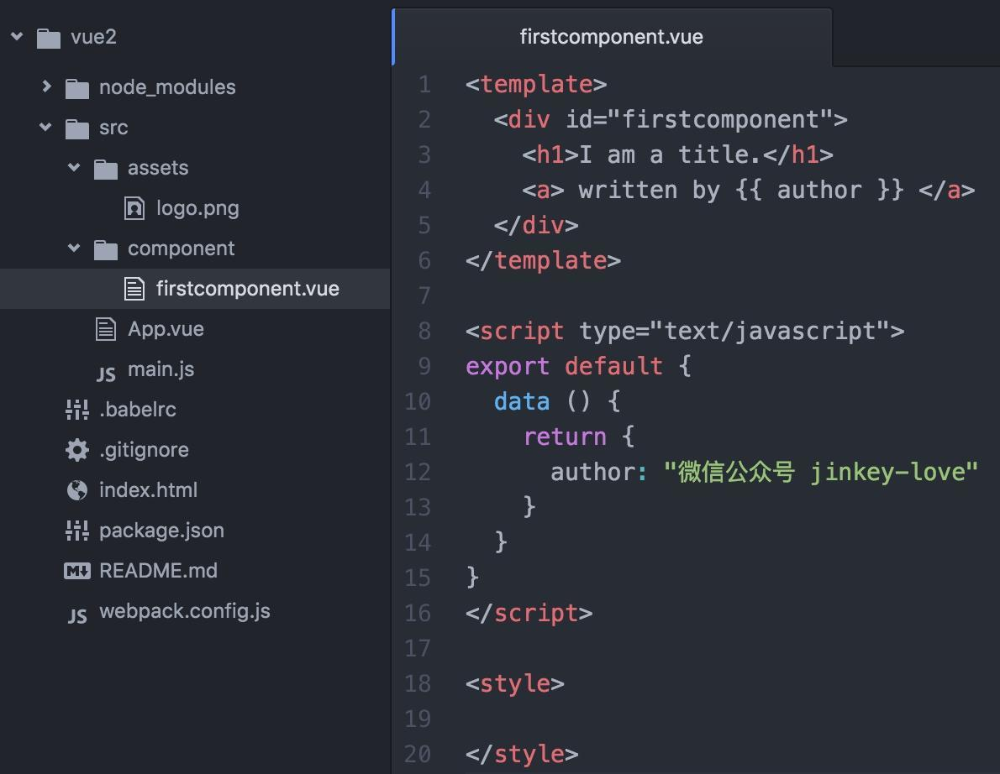
Luego usa el componente en App.vue (porque enindex.htmlse definió <div id="app"></div>, así que se usa este componente como entrada principal, por conveniencia)
Primer paso, importarEscribe en la primera línea dentro de la etiqueta<script></script>la etiqueta
import firstcomponent from './component/firstcomponent.vue'
Segundo paso, registrarEn<script></script>después del bloque de código data dentro de la etiqueta, agrega components: { firstcomponent }.¡¡¡Recuerda agregar una coma en inglés en el medio!!!
export default {
data () {
return {
msg: 'Hello Vue!'
}
},
components: { firstcomponent }
}
Tercer paso, usar。
在<template></template>agrega <firstcomponent></firstcomponent> dentro de
El código después de completar:
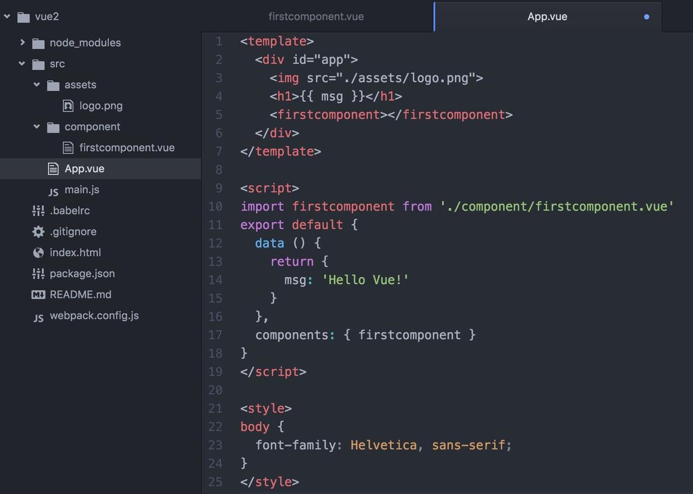
En este momento, mira lahttp://localhost:8080/página en el navegador (se actualizará automáticamente si la habías abierto antes); si no ves el efecto es porque no hasApp.vue 和 firstcomponent.vueguardado el archivo; después de guardarlo, la página se actualizará automáticamente.
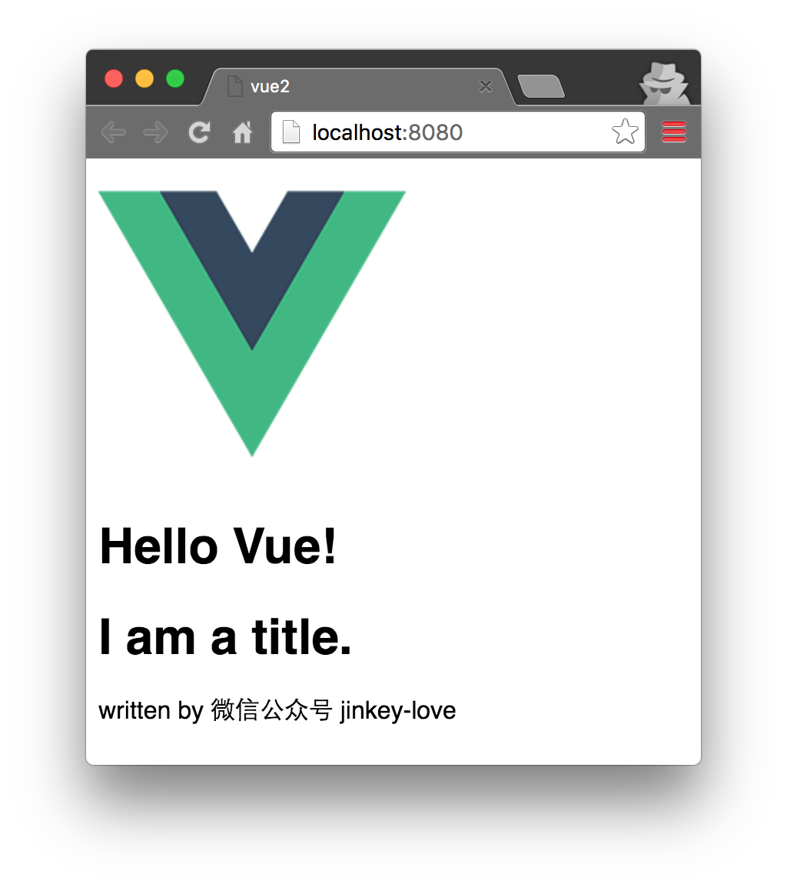
Usar el enrutador para construir una aplicación de una sola página (SPA)
Anteriormente ya se instaló vue-router mediante el comando
cnpm install vue-router --save
Agrega un alias en webpack.config.js
resolve: {
alias: {vue: 'vue/dist/vue.js'}
}
¿Por qué agregar la opción de configuración alias? Su función se describe en la documentación:
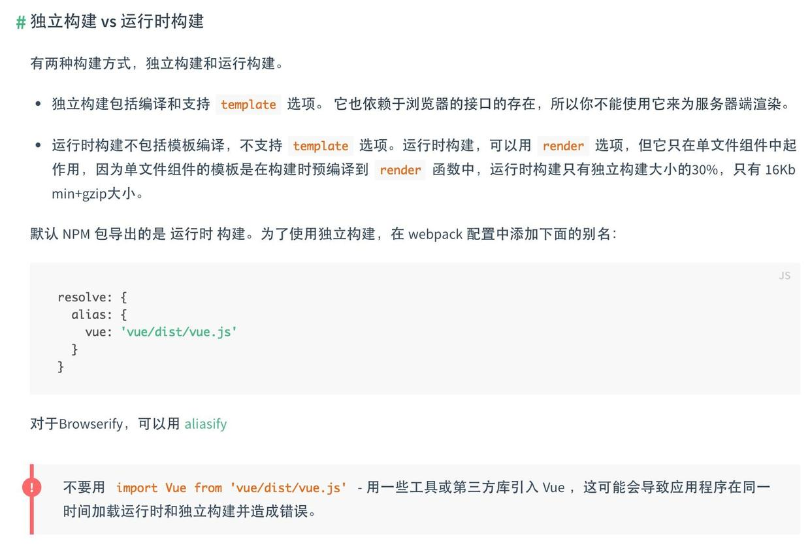
Después de modificar,webpack.config.jsEs así:
Luego escribe un componente secondcomponent.vue siguiendo el método anterior.
En este momento, modifica main.js, importa y registra.vue-router
import VueRouter from "vue-router"; Vue.use(VueRouter);
Y configura las reglas de enrutamiento y agrega router a las opciones de inicio de la aplicación. El antiguo método router.mapvue-router 2.0ya no se puede usar. El modificadomain.jses el siguiente:
Después de hacer estos cambios, abre el navegador y mira.
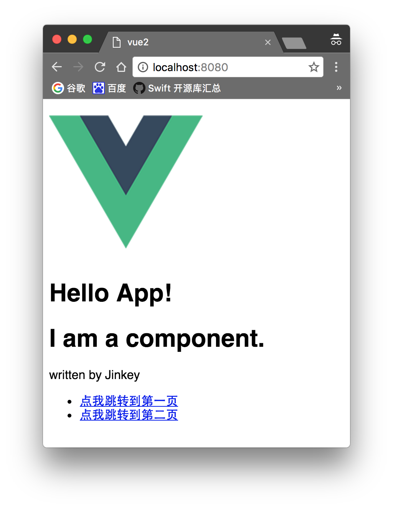
Haz clic en esos dos enlaces para probar y verás que<router-view class="view"></router-view>el contenido ya se ha mostrado, y también presta atención a quela dirección del navegador ya ha cambiado.。
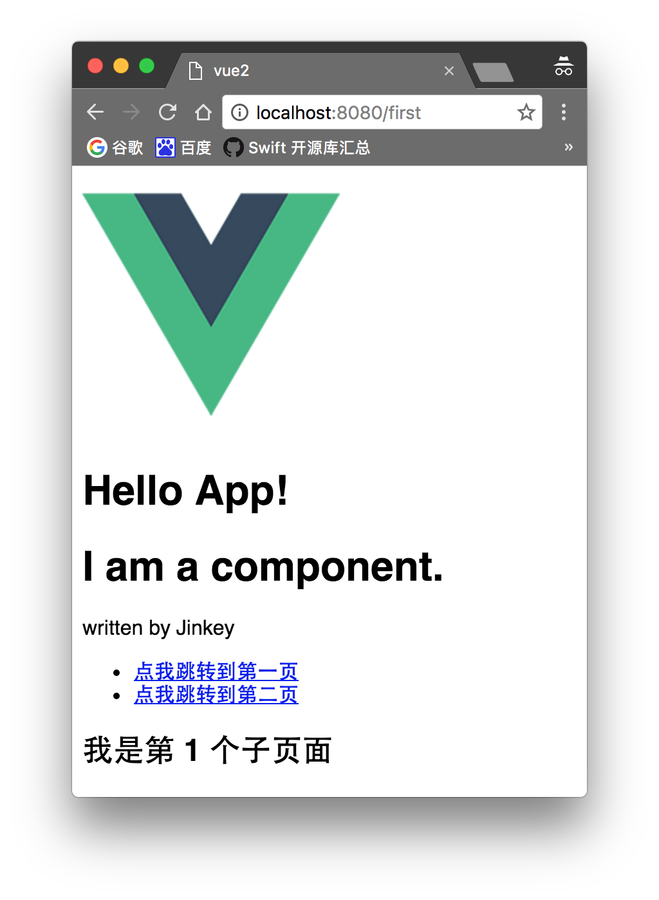
Además, también se puede escribir el contenido de App.vue en main.js, aunque no se recomienda hacerlo.
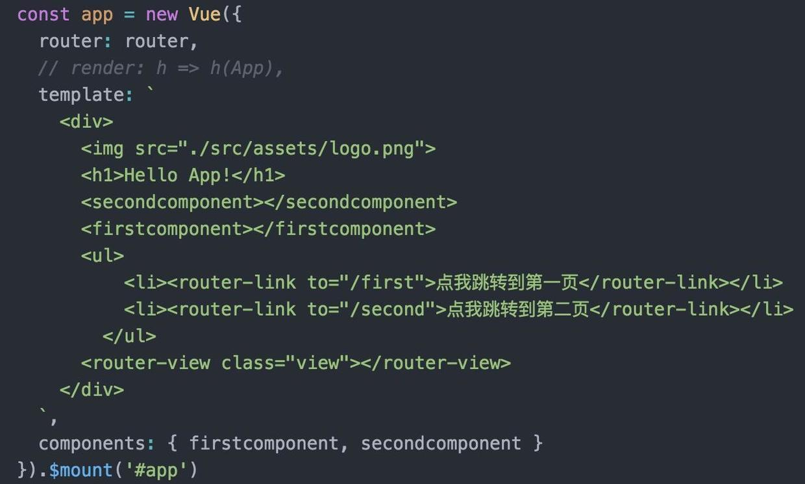
Si usas vue-router de las versiones 1.0 y 0.7, consulta el siguiente tutorial. Toda su serie es buena, aunque solo para vue1.0:
http://guowenfh.github.io/2016/03/28/vue-webpack-06-router/
Agreguemos algunos datos dinámicos a la página
En este momento las páginas son estáticas (los datos están fijos al escribir el programa y no se pueden modificar). Pero prácticamente toda aplicación solicita datos externos para cambiar dinámicamente el contenido de la página. Para ello existe una librería llamadavue-resourceque nos ayuda a resolver este problema.
Instala usando la línea de comandos.
cnpm install vue-resource --save
Impórtalo y regístralo en main.js.vue-resource:
import VueResource from 'vue-resource' Vue.use(VueResource);
Vamos a cargar datos dinámicamente en secondcomponent.vue.
Agrega una lista:
<ul>
<li v-for="article in articles">
{{article.title}}
</li>
</ul>
Dentro de data agrega un array articles y asígnale [].
Luego, después de data, agrega la función hook.mounted(Para más detalles, consulta el análisis del ciclo de vida de Vue en la documentación oficial).Recuerda agregar una coma entre data y mount.
Aquí se usa la API pública GET de Douban. Si la API es una solicitud POST de dominio cruzado, entonces necesitas configurarla en el servidor:
Access-Control-Allow-Origin: *
Ahora ejecútalo y mira. Espera un momento a que la API devuelva los datos. ¡Oh, los datos se cargaron, genial!
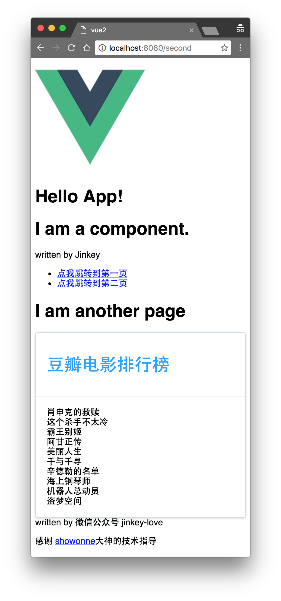
Puedes ver más formas de usar vue-router en
vue-router 2.0
http://router.vuejs.org/zh-cn/index.html
Vamos a rescatar una interfaz tan fea
Las características básicas como componentes, enlace bidireccional, enrutamiento y peticiones de datos ya funcionan. Hasta aquí, una aplicación de una sola página básicamente está formada. Pero, ¡esta interfaz es increíblemente fea! ¿Es muy trabajoso escribir tu propio framework de UI? Entonces busca uno en Internet.
Originalmente quería presentarles Vux, porque usa la especificación de diseño WeUI de WeChat, que es muy adecuada para desarrollar mini programas de WeChat o páginas web dentro de WeChat. Pero como Vux aún no soportaba vue2.0 cuando escribí este artículo, solo podemos usar otro framework.
Instala ElementUI desde la línea de comandos (aquí deberían enviar sobres rojos los de cierta empresa...).
cnpm install element-ui@next -S
Luego impórtalo y regístralo en main.js.
import Element from 'element-ui' import 'element-ui/lib/theme-default/index.css' Vue.use(Element)
Guarda, y en este momento el programa da un error.
Uncaught Error: Module parse failed: /Users/**/Desktop/vue2/node_modules/.1.0.0-rc.5@element-ui/lib/theme-default/index.css Unexpected character '@' (1:0) You may need an appropriate loader to handle this file type.
La documentación oficial tiene otra trampa. El tutorial de instalación ni siquiera menciona este paso, como si todos fuéramos expertos...
El error se debe a que hemos importadoindex.csseste archivo CSS, pero webpack no puede reconocerlo ni convertirlo a JS durante el empaquetado, por lo que hay que configurarlo para poder leer archivos CSS y de fuentes. Ejecuta el comando para instalar las siguientes tres cosas (si ya las has instalado antes, no es necesario).
cnpm install style-loader --save-dev cnpm install css-loader --save-dev cnpm install file-loader --save-dev
Agrega la siguiente configuración al array de loaders en webpack.config.js. ¡Recuerda poner comas donde debas ponerlas!
El webpack.config.js modificado es el siguiente:
Ponle ropa (estilos) a la lista de películas de Douban:
Abre el navegador e ingresa la URL: http://localhost:8080/second
La lista es mucho más bonita que antes; también puedes consultar la documentación de ElementUI para usar más estilos de componentes.
h3>Compilación
npm run build
Volvió a aparecer un error... orz
ERROR in build.js from UglifyJs
SyntaxError: Unexpected token punc «(», expected punc «:» [build.js:32001,6]
把node_modules/.bin/cross-env里的
require('../dist')(process.argv.slice(2));
Más tarde descubrí que ejecutar directamente el comando webpack ya se puede empaquetar.
webpack --color --progress
Luego sube index.html y todo el directorio dist al servidor, y listo.
Haz clic para compartir notas
<p style="font-size:14px;">¡La nota debe ser una extensión del contenido de este artículo!</p><br> <p style="font-size:12px;"><a href="../tougao.html" target="_blank">Para enviar artículos, haz clic aquí</a></p> <p style="font-size:14px;"><a href="./runoob-user-test-intro.html" target="_blank">Cómo obtener el código de invitación de registro</a></p> <h3 class="text-muted"><i class="fa fa-info-circle" aria-hidden="true"></i> Antes de compartir notas, debes <a href=".." class="runoob-pop">iniciar sesión</a>!</h3> <p><a href="./runoob-user-test-intro.html" target="_blank">Cómo obtener el código de invitación de registro</a></p>